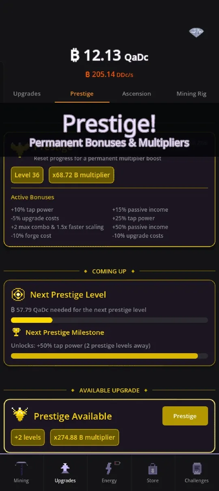
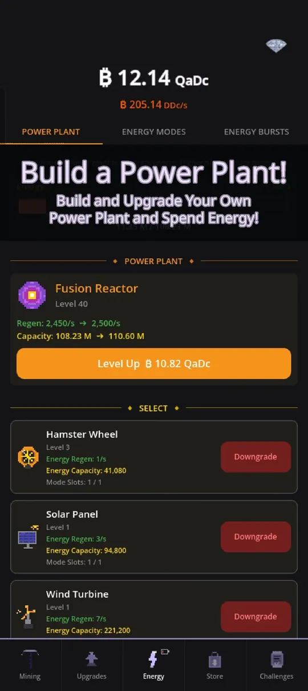

Idle clicker games for Android look simple, but the best ones hide a lot of depth. This article explains idle clicker games as a genre, what makes them tick, and how Crypto Mining Tycoon applies the formula. It is a mining game with a pixel-art pickaxe, and it has nothing to do with real cryptocurrency: the coins are only a score. You can try it on Google Play.
What is an idle clicker game?
An idle clicker, also called an incremental game, gives you a number and lets you grow it. You start by tapping to earn a little, spend that on things that earn automatically, and soon the numbers get so large that the game invents new names for them. Progress continues while you are away, so the game rewards short, regular visits more than marathon sessions.
Crypto Mining Tycoon shows this clearly in its currency. The counter in the screenshot below reads in quadrillions (QaDc), and income is shown per second in even bigger units, because the game uses 35 number suffixes, up to 1e108.

The four parts of the genre
1. Tapping and active play
Tapping is the hands-on part. In this game, quick taps build a combo multiplier that caps at 10x, and rare critical hits pay 50 times the normal tap value.
2. Passive income from upgrades
Upgrades are the engine. You buy rigs that produce coins every second, from GPUs through Server Racks and Datacenters up to far-fetched sci-fi machines. Every tier is stronger than the last, and the tiers also boost each other. See the beginner tips for how to spend your first coins.
3. Resets with permanent rewards
This is what separates a clicker from an endless grind. When growth slows down, you reset for a permanent multiplier. In Crypto Mining Tycoon that is Prestige, followed by the bigger Ascension layer.

The details are in prestige and ascension explained.
4. Side systems for variety
Good idle games add more than one number to watch. Here you also get an energy system with power plants, a Mining Rig where you slot artifacts, daily challenges, and four mini games (Maze, Match, Crusher and Slots) that earn bonus rewards. None of them replaces the core loop, and all of them feed back into it.
Offline progress and why it matters
The "idle" in the name is literal. When you close Crypto Mining Tycoon, your rigs keep earning, and when you come back you can collect up to 12 hours of income. Some purchases raise that limit to 24 hours. Because the cap is a limit and not a promise to wait, a healthy rhythm is to check in two or three times a day, spend everything, and close the app.

What to look for in an idle clicker on Android
If you are comparing games, these are the questions I would ask. They are the same ones I use when designing my own.
- Does active play matter? Tapping should feel good and give a real bonus, not be a chore.
- Is there a meaningful reset? A prestige loop keeps the long game interesting.
- Do the systems interact? Energy, artifacts and research should boost each other.
- Is it respectful of your time? Short sessions, an offline cap you can plan around and no required purchases.
- Is it readable in your language? Crypto Mining Tycoon ships in 12 languages: English, Dutch, Spanish, French, German, Portuguese, Japanese, Korean, Chinese, Russian, Italian and Turkish.
Where Crypto Mining Tycoon fits
I built this game as a deep idle clicker that you can enjoy in two-minute sessions or in an hour, and that keeps giving you new things to unlock after a long time. The mid-game systems come in layers: a power plant and energy modes early on, a Lab for Research Points after your first prestige, and later managers that automate buying. I describe how to use them in how to progress faster, and whether it is a good fit for you in is it worth playing.
How long do these games last?
A good idle game has no real ending, but it should have a rhythm. In Crypto Mining Tycoon the rhythm is a series of runs: each run is faster than the last because of the permanent multipliers, and each Ascension opens up something new, such as later power plants and extra energy modes. Seasons add a four-week theme with goals and an exclusive artifact, and a monthly Battle Pass keeps the store fresh. The point is that you always have a next goal, and it is always close enough to reach in a short session.
That is also why the genre fits a phone so well. You do not need to sit and stare at the screen. You tap for a minute, make your purchases, check the challenges, and put the phone away while your rigs keep working.
Tips for choosing your next idle game
Give any new idle game a fair trial of about three sessions. The first one is always slow, because the numbers are small and the systems are still locked. By the third session you should see whether the game keeps offering new decisions or only bigger numbers. Check that the store does not block basic progress, that the offline cap is clear, and that the game does not ask you to stay online. Crypto Mining Tycoon keeps your progress saved on the phone, with daily backups and an optional cloud save, so a new phone does not mean starting over.
Try it
The best way to understand the genre is to play ten minutes. Get Crypto Mining Tycoon on Google Play, tap a few times, buy your first upgrade and see how quickly the numbers move.
Frequently Asked Questions
What is an idle clicker game?
An idle clicker, or incremental game, lets you tap to earn, spend on things that earn automatically, and keep growing while you are away. Resets for permanent multipliers keep the long game interesting.
Is Crypto Mining Tycoon real cryptocurrency?
No. It is a game and the coins are only a score. There is no wallet, nothing can be withdrawn and no real money or crypto is earned by playing.
Which languages does Crypto Mining Tycoon support?
It supports 12 languages: English, Dutch, Spanish, French, German, Portuguese, Japanese, Korean, Chinese, Russian, Italian and Turkish. You can switch the language in the settings at any time, and the text is translated throughout the game.